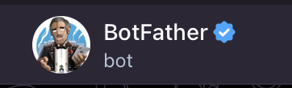
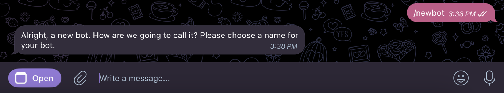
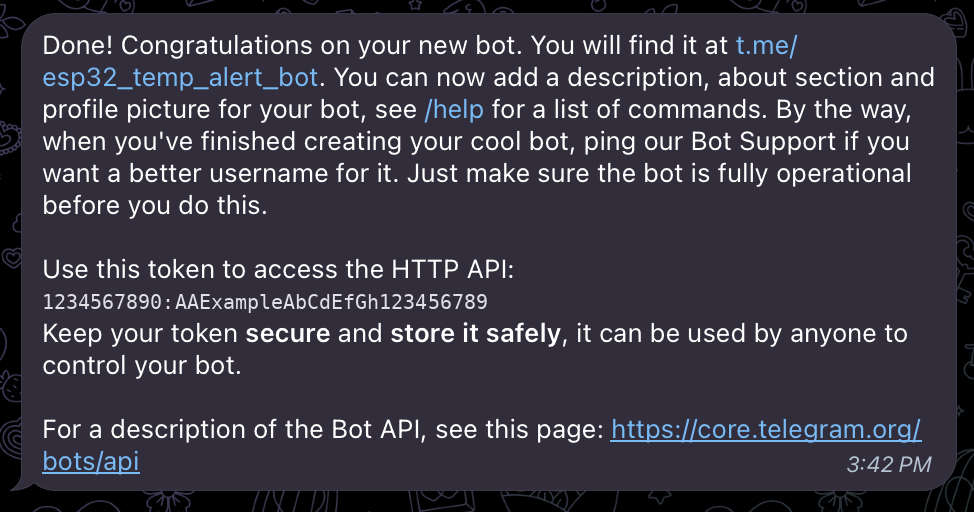
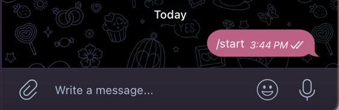

Build ESP32 IoT projects with notifications
and a custom dashboard.
Bina projek IoT ESP32 dengan notifikasi
dan papan pemuka tersuai.
A practical guide to three common ESP32 approaches: Telegram Bot notifications,
Blynk Events & Notifications, and a custom dashboard hosted directly by the ESP32 web server.
Panduan praktikal untuk tiga pendekatan ESP32 yang biasa digunakan: notifikasi Telegram Bot,
Blynk Events & Notifications, dan papan pemuka tersuai yang dihoskan terus oleh pelayan web ESP32.
Create a BotFather bot, obtain your Chat ID, connect the bot to ESP32, and send temperature alerts to Telegram.
Cipta bot menggunakan BotFather, dapatkan Chat ID, sambungkan bot kepada ESP32, dan hantar amaran suhu melalui Telegram.
02
Blynk Notification
Notifikasi Blynk
Configure Blynk Events & Notifications and trigger push or email alerts using Blynk.logEvent().
Tetapkan Blynk Events & Notifications dan cetuskan notifikasi push atau emel menggunakan Blynk.logEvent().
03
ESP32 Web Server
Pelayan Web ESP32
Create your own HTML, CSS and JavaScript dashboard and host it directly on the ESP32 without using an IoT dashboard platform.
Cipta papan pemuka HTML, CSS dan JavaScript anda sendiri dan hoskannya terus pada ESP32 tanpa menggunakan platform papan pemuka IoT.
01
Telegram Bot Notification
Notifikasi Telegram Bot
Use Telegram when you want the ESP32 to send direct messages to your phone.
The example below monitors a DHT11 sensor and sends a warning when the temperature reaches the specified limit.
Gunakan Telegram apabila anda mahu ESP32 menghantar mesej terus ke telefon anda.
Contoh di bawah memantau sensor DHT11 dan menghantar amaran apabila suhu mencapai had yang ditetapkan.
A. Create the Telegram Bot
A. Cipta Telegram Bot
01
Open BotFather
Buka BotFather
Open Telegram and search for @BotFather. Make sure you select the official verified BotFather account.
Buka Telegram dan cari @BotFather. Pastikan anda memilih akaun rasmi BotFather yang telah disahkan.

Official verified BotFather account
Akaun rasmi BotFather yang telah disahkan
02
Create a new bot
Cipta bot baharu
Send the following command to BotFather:
Hantar arahan berikut kepada BotFather:
/newbot
BotFather will ask you to choose a name for your bot. Enter any suitable name, for example ESP32 Temperature Alert.
BotFather akan meminta anda memilih nama untuk bot anda. Masukkan nama yang sesuai, contohnya ESP32 Temperature Alert.

Create a bot using /newbot
Cipta bot menggunakan /newbot
03
Create a username
Cipta nama pengguna
BotFather will ask for a username. The username must end with bot, for example esp32_temp_alert_bot. If the username is already taken, choose another one.
BotFather akan meminta nama pengguna. Nama pengguna mesti berakhir dengan bot, contohnya esp32_temp_alert_bot. Jika nama pengguna tersebut telah digunakan, pilih nama yang lain.
04
Copy and save the Bot Token
Salin dan simpan Bot Token
After the bot is created, BotFather will provide an HTTP API token. Save the token because it will be used in the ESP32 program.
Selepas bot dicipta, BotFather akan memberikan token HTTP API. Simpan token tersebut kerana ia akan digunakan dalam program ESP32.

Example of the BotFather confirmation message and Bot Token
Contoh mesej pengesahan BotFather dan Bot Token
Important: Keep your Bot Token secure. Anyone who has the token may be able to control your bot.
Penting: Pastikan Bot Token anda disimpan dengan selamat. Sesiapa yang mempunyai token tersebut mungkin boleh mengawal bot anda.
B. Start Your Bot
B. Mulakan Bot Anda
05
Open your new bot
Buka bot baharu anda
Open the bot link provided by BotFather and press START, or send:
Buka pautan bot yang diberikan oleh BotFather dan tekan START, atau hantar:
/start

Start the conversation with /start
Mulakan perbualan dengan /start
C. Get Your Telegram Chat ID
C. Dapatkan Telegram Chat ID
06
Send a message to your bot
Hantar mesej kepada bot anda
Send a simple message such as:
Hantar mesej ringkas seperti:
hello
07
Use getUpdates
Gunakan getUpdates
Open a web browser and enter the following address. Replace <YOUR_BOT_TOKEN> with your actual Bot Token:
Buka pelayar web dan masukkan alamat berikut. Gantikan <YOUR_BOT_TOKEN> dengan Bot Token sebenar anda:
Go to Developer Zone → select your Template → Events & Notifications.
Pergi ke Developer Zone → pilih Template anda → Events & Notifications.
03
Create a new event
Cipta event baharu
In Events & Notifications, click Edit. Then select Add New Event and fill in the required information.
Dalam Events & Notifications, klik Edit. Kemudian pilih Add New Event dan isi maklumat yang diperlukan.
General Section
Bahagian General
Setting
Tetapan
Value
Nilai
Event Name
High Temperature
Event Code
high_temperature
Type
Warning
Notification Section
Bahagian Notification
Enable Notifications
Aktifkan Notifications
Email to: Device Owner
Push Notification to: Device Owner
Visibility
Paparan
Device Page (App and Console)
Home Screen (App only)
Limit Section
Bahagian Limit
Set Every 1 message will trigger the event and
Event will be sent to the user only once per 1 minute.
One message per minute is suitable for a demonstration. You can change the settings according to your project requirements.
Tetapkan Every 1 message will trigger the event dan
Event will be sent to the user only once per 1 minute.
Satu mesej setiap satu minit sesuai untuk tujuan demonstrasi. Anda boleh mengubah tetapan ini mengikut keperluan projek anda.
Add the Notification Code
Masukkan Kod Notifikasi
Next, add the notification code to your ESP32 program. An example is shown below:
Seterusnya, masukkan kod notifikasi ke dalam program ESP32 anda. Contoh ditunjukkan di bawah:
Make sure the event code used in your ESP32 program,
"high_temperature", is exactly the same as the Event Code created in Blynk.
Pastikan event code yang digunakan dalam program ESP32 anda,
"high_temperature", sama seperti Event Code yang dicipta dalam Blynk.
Finally, upload the program to the ESP32. When the specified condition is met,
such as when the temperature exceeds the set limit, Blynk will send a notification.
Akhir sekali, muat naik program ke ESP32. Apabila syarat yang ditetapkan dipenuhi,
contohnya apabila suhu melebihi had yang ditetapkan, Blynk akan menghantar notifikasi.
Push notifications are received through the Blynk mobile app, not through the web browser.
If email notification is enabled, the notification can also be sent to the device owner's email.
Notifikasi push diterima melalui aplikasi mudah alih Blynk, bukan melalui pelayar web.
Jika notifikasi emel diaktifkan, notifikasi juga boleh dihantar ke emel pemilik peranti.
03
ESP32 Web Server Dashboard
Papan Pemuka Pelayan Web ESP32
If you do not want to use an IoT dashboard platform such as Blynk or Arduino IoT Cloud,
you can create your own web-based dashboard for the ESP32 using HTML, CSS and JavaScript.
Jika anda tidak mahu menggunakan platform papan pemuka IoT seperti Blynk atau Arduino IoT Cloud,
anda boleh membina papan pemuka berasaskan web anda sendiri untuk ESP32 menggunakan HTML, CSS dan JavaScript.
Describe project flowTerangkan aliran projek
Create index.htmlCipta index.html
Test the dashboardUji papan pemuka
Create dashboard.hCipta dashboard.h
Upload to ESP32Muat naik ke ESP32
A. Create the Dashboard Using index.html
A. Cipta Papan Pemuka Menggunakan index.html
You can first create the dashboard as an index.html file.
You can use vibe coding with ChatGPT by describing how your project works,
what sensors and outputs you are using, and how you want the dashboard to look.
Anda boleh mula dengan mencipta papan pemuka sebagai fail index.html.
Anda boleh menggunakan vibe coding dengan ChatGPT dengan menerangkan bagaimana projek anda berfungsi,
sensor dan output yang digunakan, serta bagaimana anda mahu reka bentuk papan pemuka tersebut.
B. Explain the Project Flow
B. Terangkan Aliran Projek
For example, explain the following information:
Sebagai contoh, terangkan maklumat berikut:
What sensors are usedSensor yang digunakan
What data should be displayedData yang perlu dipaparkan
What devices need to be controlledPeranti yang perlu dikawal
What buttons, indicators, gauges or status information are requiredButang, indikator, meter atau maklumat status yang diperlukan
How Automatic and Manual modes should workBagaimana mod Automatik dan Manual perlu berfungsi
Then, ask ChatGPT to generate the index.html code for the dashboard.
After the dashboard is completed, you can ask ChatGPT to combine and integrate the dashboard with your existing ESP32 code.
Kemudian, minta ChatGPT menjana kod index.html untuk papan pemuka tersebut.
Selepas papan pemuka siap, anda boleh meminta ChatGPT menggabungkan dan mengintegrasikan papan pemuka tersebut dengan kod ESP32 sedia ada.
C. Example Prompt
C. Contoh Prompt
prompt.txt
Create an index.html dashboard for my ESP32 IoT project.
Hardware:
- ESP32
- DHT11 temperature and humidity sensor
- LED
- Buzzer
Dashboard requirements:
- Show temperature and humidity
- Show LED and buzzer status
- Include Automatic and Manual modes
- Automatic mode: activate LED and buzzer when
temperature reaches the temperature limit
- Manual mode: allow the buzzer to be controlled
using an ON/OFF button
- Show a warning message when temperature is high
- Make the dashboard responsive for laptop and mobile
Cipta papan pemuka index.html untuk projek IoT ESP32 saya.
Perkakasan:
- ESP32
- Sensor suhu dan kelembapan DHT11
- LED
- Buzzer
Keperluan papan pemuka:
- Paparkan suhu dan kelembapan
- Paparkan status LED dan buzzer
- Sediakan mod Automatik dan Manual
- Mod Automatik: aktifkan LED dan buzzer apabila
suhu mencapai had suhu yang ditetapkan
- Mod Manual: benarkan buzzer dikawal menggunakan
butang ON/OFF
- Paparkan mesej amaran apabila suhu tinggi
- Pastikan papan pemuka responsif untuk komputer riba dan telefon
D. Create dashboard.h
D. Cipta dashboard.h
For better code organization, you can create a separate file called dashboard.h.
The HTML, CSS and JavaScript code for the dashboard can be stored inside this file.
Untuk penyusunan kod yang lebih baik, anda boleh mencipta fail berasingan bernama dashboard.h.
Kod HTML, CSS dan JavaScript bagi papan pemuka boleh disimpan di dalam fail ini.
Your main ESP32 program can then include it using:
Program utama ESP32 anda kemudian boleh memasukkannya menggunakan:
#include "dashboard.h"
Important: You do not need to install dashboard.h as a library.
Simply create the dashboard.h file in the same Arduino project folder as your main .ino file.
Penting: Anda tidak perlu memasang dashboard.h sebagai library.
Cipta sahaja fail dashboard.h dalam folder projek Arduino yang sama dengan fail utama .ino.
E. How the ESP32 Web Server Works
E. Bagaimana Pelayan Web ESP32 Berfungsi
The ESP32 can host the dashboard through its built-in web server.
When your computer or smartphone is connected to the same network as the ESP32,
you can open the ESP32 IP address in a web browser to access the dashboard.
ESP32 boleh menghoskan papan pemuka melalui pelayan web terbina dalam.
Apabila komputer atau telefon pintar anda disambungkan ke rangkaian yang sama dengan ESP32,
anda boleh membuka alamat IP ESP32 dalam pelayar web untuk mengakses papan pemuka.
You can view an example of an interactive IoT dashboard using the link below.
It can be used as a visual reference before integrating the dashboard with real ESP32 hardware.
Anda boleh melihat contoh papan pemuka IoT interaktif melalui pautan di bawah.
Ia boleh digunakan sebagai rujukan visual sebelum papan pemuka diintegrasikan dengan perkakasan ESP32 sebenar.